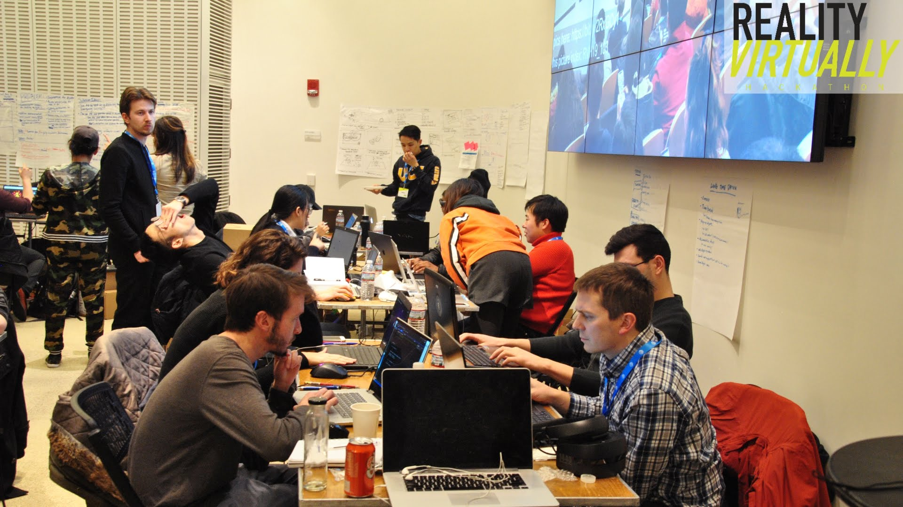
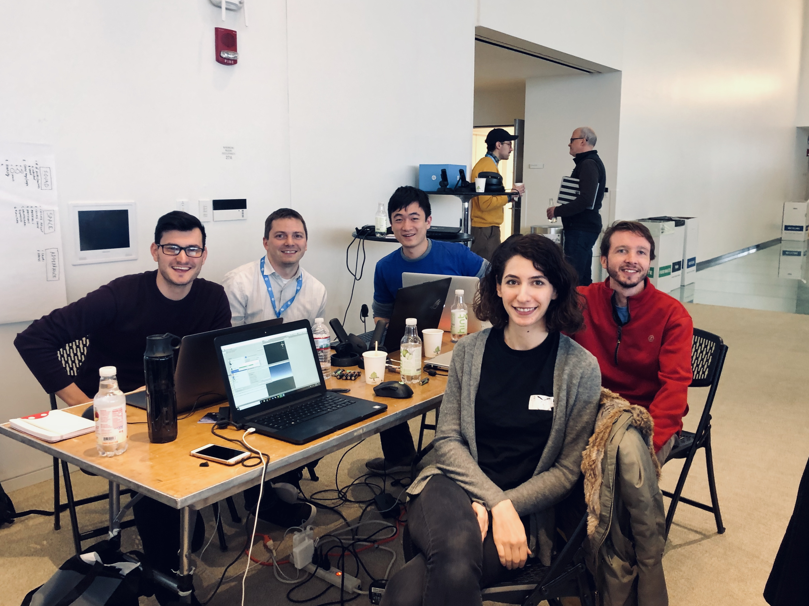

Sound Space
Cambridge, MA // 2019An Acoustic Simulation Tool to Visualize Sound Waves in VR.


An acoustic simulation and visualization tool in VR to understand the influcence of sound on room designs developed during the Reality Virtually Hackathon at MIT.
This provides architects with a visual tool to be more aware of the acoustic impacts of their different design options.
XR technologies enable us to visualize things that are intangible, and we want to take advantage of this opportunity to enhance the process of designing for design elements that are inherently non-visual.
These tools can influence design in a new way, and provides architects with a visual tool to be more sensitive and aware of the acoustic impacts of their different design options.